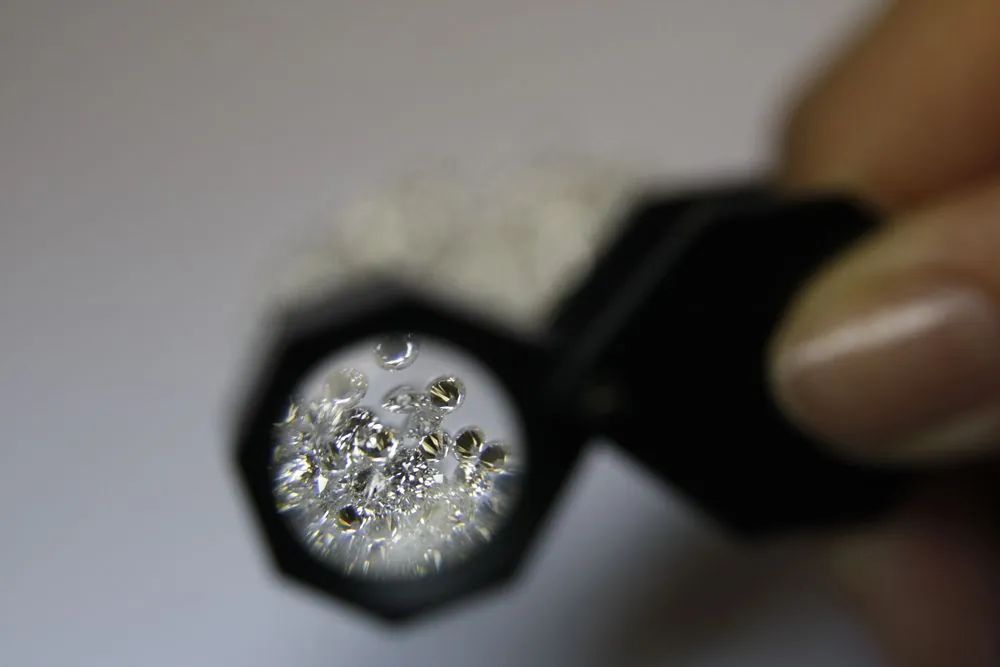
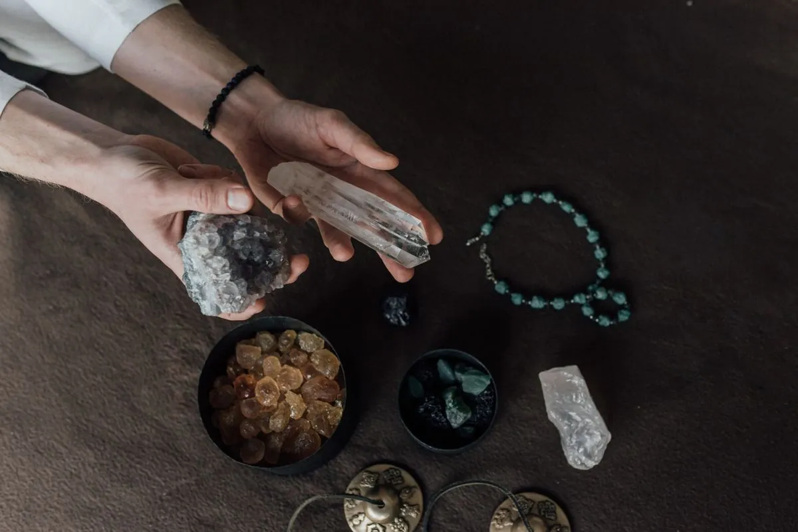

Les guides du joaillier
Ce que nous répondons en boutique, écrit noir sur blanc : tailles, entretien, qualité des pierres et des métaux, certificats et éthique.
01Trouver sa taille de bague
Une bague juste doit passer sur le phalangette avec une légère résistance, puis tourner librement sans osciller. Le matin, les doigts sont plus fins ; le soir et en été, ils gonflent. Mesurez en fin de journée, à température ambiante.
La méthode du fil, à la maison
- Enroulez un fil fin (ou une bande de papier de 5 mm) autour de la base du doigt, sans serrer.
- Marquez le croisement, déroulez, mesurez en millimètres : c’est votre circonférence.
- Retrouvez la taille française dans le tableau ci-dessous (circonférence en mm = taille française × 3,14 × 10 / 100… en clair : circonférence ≈ 31,4 × taille / 10).
| Taille FR | Diamètre intérieur | Circonférence | US | UK |
|---|---|---|---|---|
| 48 | 15,3 mm | 48 mm | 4½ | I |
| 50 | 15,9 mm | 50 mm | 5¼ | K |
| 52 | 16,6 mm | 52 mm | 6 | L½ |
| 54 | 17,2 mm | 54 mm | 7 | N |
| 56 | 17,8 mm | 56 mm | 7¾ | P |
| 58 | 18,5 mm | 58 mm | 8½ | Q½ |
En cas de doute entre deux tailles, prenez la plus grande — puis venez la faire retoucher : la première retouche est offerte dans l’année suivant l’achat. Et si la surprise doit rester surprise, une bague existante portée au même doigt (mesurée en boutique, ou tracée sur papier) fait un messager parfait.
02Entretenir ses bijoux
L’or et les pierres ne craignent que trois choses : les chocs, les produits et l’oubli. Voici nos règles de maison, les mêmes que nous appliquons à l’atelier.
Le rituel du dimanche (5 minutes)
- Bain tiède : eau + une goutte de liquide vaisselle, 10 minutes.
- Brosse à dents souple, délicatement sous le chaton et derrière les griffes.
- Rinçage à l’eau claire, séchage au chiffon microfibre — jamais en papier.
À éviter absolument
- Piscine et spa : le chlore attaque les alliages et ternit le rhodium.
- Parfum et crèmes : vaporisez avant de porter, jamais après.
- Perles et émeraudes : jamais d’ultrasons ni de vapeur — chiffon humide uniquement.
- Le rangement en vrac : les pierres se rayent entre elles. Un compartiment par pièce, ou la pochette fournie.
Entretien à vie. Apportez vos pièces quand vous voulez : bain d’ultrasons, contrôle de sertissage et re-lustrage sont offerts, à jamais, pour tout bijou signé Éclat d’Or.
03Comprendre la qualité d’une pierre
Pour le diamant, le monde entier parle le langage des 4 C. Les voici traduits en français de boutique.
- Carat
- Le poids. 1 carat = 0,20 g. À taille égale, une pierre bien taillée de 0,90 ct peut sembler plus grande qu’une 1,00 ct décevante.
- Couleur
- De D (blanc absolu) à Z (teinté). Nous travaillons de D à G : l’œil ne voit plus la différence en dessous de H, le portefeuille, si.
- Clarté
- De IF (sans inclusion) à SI (inclusions visibles à la loupe ×10). VS1-VS2 offre le meilleur équilibre éclat / budget.
- Taille
- Le seul C fait de main humaine — et le plus décisif pour l’éclat. Nous n’acceptons que « Excellent » ou « Ideal ».
Pour les pierres de couleur — saphirs, émeraudes, rubis — la hiérarchie change : c’est l’origine et l’intensité de la teinte qui dominent, plus que la pureté. Un saphir de Ceylan légèrement voilé mais vivant vaut mieux qu’une pierre morte d’un traitement exagéré.
04Les métaux, sans langue de bois
| Métal | Titre | Caractère | Pour qui |
|---|---|---|---|
| Or jaune 18 ct | 750 ‰ | Le classique chaud, 75 % d’or pur allié cuivre-argent | Celui qui veut le bijou d’héritage |
| Or blanc 18 ct | 750 ‰ | Blanc froid, rhodié ; le rhodium se rejoue tous les 2–3 ans | Amoureux des diamants discrets |
| Or rose 18 ct | 750 ‰ | Chaud et doux, allié cuivre ; flatteur sur toutes les peaux | Premier bijou, peaux claires |
| Platine 950 | 950 ‰ | Plus dense, plus rare, patine grise noble au fil des ans | Sertissages d’exception, pour toujours |
| Argent 925 | 925 ‰ | Vif mais vivant : il noircit, et c’est réversible | Grandes pièces sculpturales |
Nos alliages sont exempts de nickel ajouté, adaptés aux peaux sensibles. Tout bijou de la maison porte le poinçon d’État français (tête d’aigle pour l’or 18 ct) et notre poinçon de maître.
05Certificats & rapports gemmologiques
Un certificat est la carte d’identité d’une pierre, établie par un laboratoire indépendant — jamais par le vendeur. Il décrit les 4 C, les proportions, la fluorescence, et souvent la carte des inclusions qui rend la pierre infalsifiable.
Ce que nous joignons à vos pièces
- Rapport de laboratoire indépendant pour toute pierre de plus de 0,30 ct (GRS, IGI ou équivalent reconnu).
- Certificat de la maison, manuscrit et numéroté : description, poids, pierres, date et signature de l’artisan.
- Facture détaillée : indispensable pour l’assurance, elle mentionne la description complète de la pièce.
Pour une assurance « valeurs à specifier », nous établissons gratuitement une description d’expertise reprenant tous les éléments exigés par les assureurs — à renouveler tous les cinq ans, nous le faisons aussi.
06Éthique & traçabilité
Un bijou porte de la lumière ; il ne devrait jamais porter de l’ombre. Depuis 2021, nos choix sont simples, vérifiables, et sans surcoût pour vous.
Or 100 % recyclé
Fondu à partir d’or de récupération certifié RJC Chain of Custody, raffiné en France. Même métal, même éclat, zéro nouvelle mine.
Pierres traçables
Diamants sourcés selon le processus de Kimberley, avec exigence de traçabilité d’origine documentée pour toute pierre de plus de 0,30 ct.
Atelier visible
Toute la chaîne de valeur est internalisée à Paris, salaires et cotisations français, deux apprentis formés chaque année.
